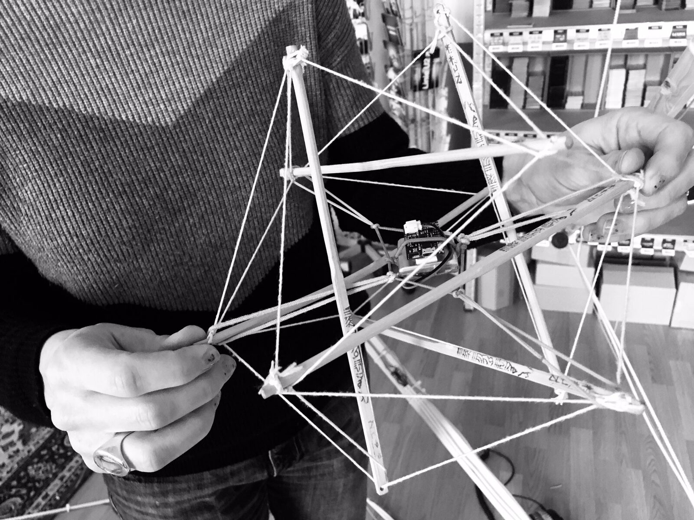
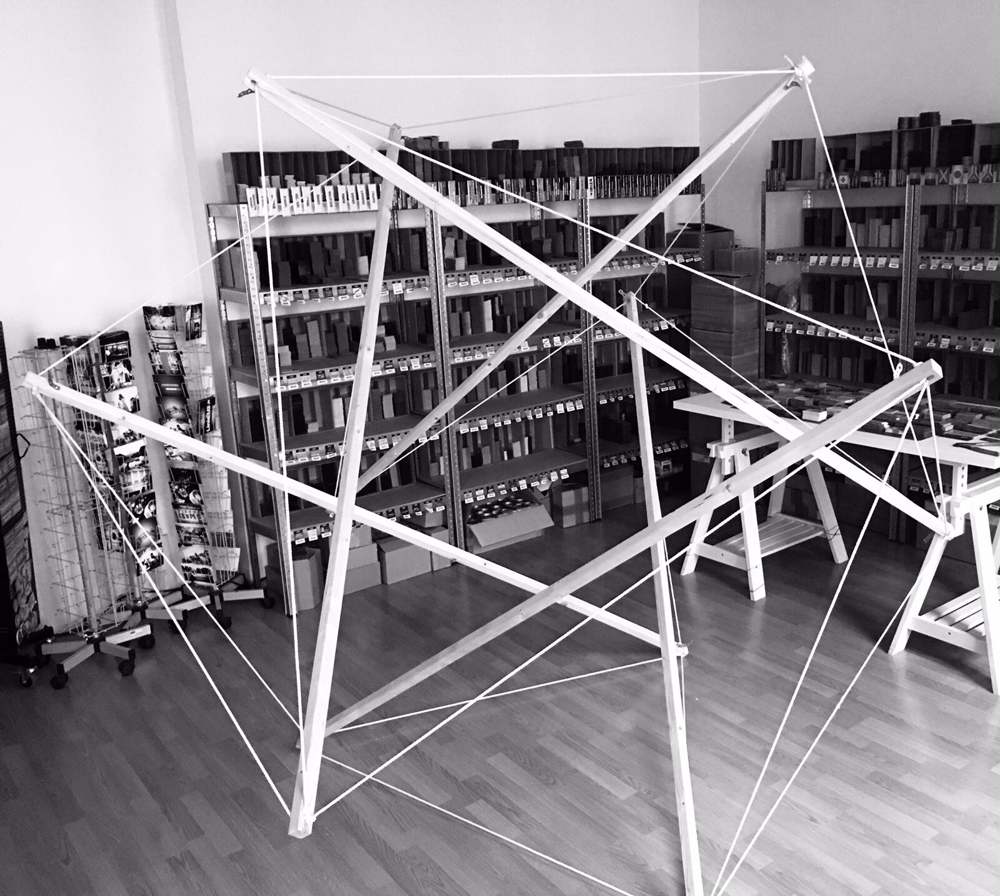

The \'SonIcosahedron\' - a spatial (auto)instrument
The 'SonIcosahedron' - a spatial (auto)instrument
1. ABSTRACT
While sound control via gestures, data gloves, cameras and other interface technologies has become quite popular in experimental music, the development of tools for producing and performing spatial audio is still very limited. Spatialization itself is mostly based on the linear principle of a traditional mixing desk. The project aims to develop a circular auto-instrument for 'playing space' in times of social (and sonic) distancing.
The instrument consists of two parts: (1) 'CORE' (control remote), a remote in the shape of an icosahedron constructed as tensegrity1 with a motion sensor (Bitalino R-IoT) placed in its center (Fig 1) and (2) 'SKIN' (sonic kinetic installation), the ten times as big construction of the same shape with speakers attached to each of the twelve vertices allowing a full sphere auditory immersion of the performer/listener positioned him/herself in its center (Fig 2). For the transmission an OSC data stream provided by the motion sensor is being analyzed by max/msp whereby gyroscope data of quaternions (w, x, y, z) control diverse parameters of a granular synthesis engine (offset, grain size, pitch etc.) making it possible to freely navigate through pre- or live recorded material. In addition to this, audio processing (ringmodulation, harmonizer) will be controlled by gyroscope parameters (pitch, roll, yaw) of the motion sensor. The resulting audio stream is then encoded into Ambisonics B-format while spatialization itself can be controlled by the accelerometer information (x, y, z) provided by the Bitalino R-IoT. Subsequently the stream is decoded and made audible via twelve speakers.


Fig 1: 'CORE' - tensegrity icosahedron with Bitalino R-IoT


Fig 2: 'SKIN' 12-channel tensegrity icosahedron
As the basic principle of the instrument relies on random and unpredictability, I take Donna Haraway's concept of String figures (2016) as a point of reference. Haraway proposes String figure games and their ever-changing patterns as a way of connecting diverse perspectives and separate parts of a system in such a way, that making and thinking by the threads of hand and brain are inseparably linked, bringing up new and unexpected ideas and results. Thus, the instrument can be understood as an open or 'sympoetic' system which does not provide a hermetical cause-effect relation but rather can be seen as a 'dowsing rod' for searching, finding, losing sound events and sonic qualities in the setting of an 'electronic séance'.
While the first prototype of the remote consists of chopsticks and cotton yarn, a more durable version with additional features will be realized. By replacing the sticks by metal tubes and the yarn by guitar strings additional playing possibilities will be provided. Thus, a player can pluck the strings wich can be picked up via the built in microphone of the Bitalino R-IoT. In addition to this, the strings of the larger sphere will be replaced by harp or piano strings and stimulated via electromagnets attached to the struts. A supplementary surface transducer will be placed underneath the base triangle platform in order to transmit bass frequencies.
1 Tensegrity – a term coined by Buckminster Fuller in the 1960s, is a structural principle of compression and tension whereby the compressed struts do not touch each other while the prestressed strings delineate the system spatially.
2. BIO
Florian Goeschke is a sound artist based in Vienna. In his current research he examines the interconnection of sound and motion and its impact on human perception through a method that interrelates listening and doing. He studied Fine Arts in Basel (CH) and Electroacoustic Composition at the University of Music and Performing Arts, Vienna. He received a M.A. in Sound Studies from the University of Fine Arts, Berlin in 2010. Beside realizing site specific installations, he curated sound art exhibitions in Berlin from 2009-2013. His work has been shown in venues and festivals such as Hausklang at Haus der Kulturen der Welt and club transmediale in Berlin, Cultura Nova (NL) and Concertgebouw Brugge (BE) among others. He worked with the Flemish theater collective CREW_vzw and the music collective Champs d'Action inside the European research program dreamspaceproject.eu investigating 3D-audio in the context of immersive media from 2013-2015. In his multimedia works he weaves his divergent experiences in the field of visual art, sound art and landscape design into 'atmospheric' pieces and participative installations placing the audience in the center of the work.
3. LINKS
https://vimeo.com/517538427